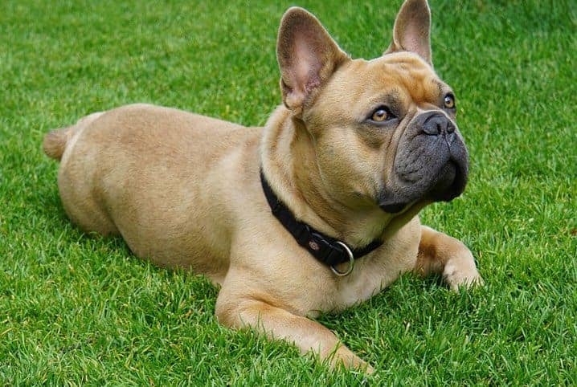

É uma raça tranquila e companheira, sempre muito carinhosa com os tutores! O cachorro Buldogue francês é conhecido por ser tranquilo, atencioso e muito companheiro de seus amigos humanos. Geralmente se dá muito bem com crianças devido a seu jeito brincalhão e dócil! Esse pequeno pet gosta de se divertir, mas é inegável sua essência de cão de companhia, por isso o tutor de um Buldogue pode contar com ele para brincadeiras e também para relaxar em casa.
Aqui vamos contar tudo sobre Buldogue francês e seu comportamento, mas antes é importante que conheça suas características e necessidades físicas. Este não é um pet enérgico, mas é importante que mantenha uma rotina de caminhadas diárias para evitar o sobrepeso, por isso vive muito bem em apartamentos. Esse é um cãozinho braquicefálico e, por isso, não é muito fã de calor intenso. Lembre-se de cuidar para que ele não desidrate nesses períodos e evite fazer exercícios com o pet em horários de pico do sol.
Apesar de serem muito amigáveis e dóceis, podem ter sinais territorialistas e possessivos em relação a seus companheiros humanos, principalmente se houver outros cães no ambiente. Sendo assim, é importante que estimule o contato dos Buldogues com outros pets desde cedo.
Fizemos um gráfico nivelando de 0 a 5 as características da raça, veja a baixo!
O Buldogue tem um corpinho bem forte e compacto, com ruguinhas pela cabeça, que é quadrada e robusta. Seu focinho é achatado e curto, com narinas abertas, seus olhos são bem visíveis e arredondados, demonstrando seu constante estado de alerta, assim é percebido pelas orelhinhas eretas.
O Buldogue Francês requer banhos mensais, com atenção especial à escolha de shampoos para preservar a saúde da pele e pelos. A secagem adequada das dobrinhas é essencial para evitar infecções bacterianas. Como em todas as raças, há predisposição a certas doenças, sendo comuns problemas oculares, como cataratas e deformações nas pestanas. Monitorar sinais e realizar consultas veterinárias regulares são formas eficazes de tratar ou prevenir esses problemas de saúde.
Antes de decidir ter um novo membro, como o filhote de Buldogue francês, é importante que saiba que ele exigirá muita atenção, acompanhamento, principalmente por estar vivendo momentos inéditos e estar em um local novo. Fique sempre por perto do pequeno para evitar que ele suba escadas sozinho ou se machuque com algum artigo da sua casa. Providencie o mais rápido possível vacinas e vermífugos junto a um veterinário!